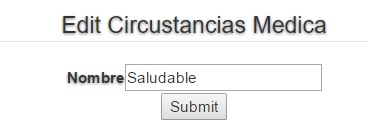
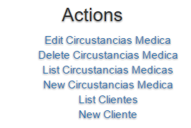

Capítulo 6 Cirscunstancias medicas
aqui puedes encontarar las acciones que puedes hacer en las tablas Cirscunstancias medicas.
6.1 Tabla Cirscunstancias medicas

Figura 6.1 Tabla Cirscunstancias medicas
En la tabla Cirscunstancias medicas puedes editar, eliminar y ver una Cirscunstancia medica.
6.2 Vista del Cirscunstancias medicas

Figura 6.2 vista Cirscunstancias medicas
En ver la Cirscunstancia medica podemos ver los datos del Cirscunstancia medica(no podremos hacer modificaciones).
6.3 Editar Cirscunstancias medicas

Figura 6.3 Editar Cirscunstancias medicas
Aqui podremos modificar los datos del Cirscunstancia medica.
6.4 Acciones Cirscunstancias medicas

Figura 6.4 Acciones Cirscunstancias medicas
Estas son las acciones que se pueden hacer desde Cirscunstancias medicas.